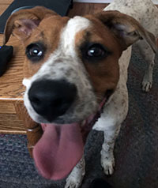

Month 10: Adolescence
Sexual Maturity
If they haven't already, your dog should be entering adolescence. What does that mean to you? If you have a female, she may have already, or be about to enter her first heat cycle. If you have a male dog, you may notice that he begins or increases marking behavior. Even though your pup is approaching adult size, they still have the brain of a puppy.
Should I Spay or Neuter my pet?
This is a very personal decision. There are good reasons both for and against spaying or neutering your pet at this time in their life.
Reasons to Spay or Neuter
- Health Benefits
- Possible reduction of agression
- Less likely for your pet to try to escape
- Possible reduction of marking behavior in males
- Prevention of unwanted litters
- Not having to deal with heat cycles
- Prevent uterine infections
Reasons to delay ar not Spay or Neuter
- Increased Risk of Hip Displaysia
- Increased Risk of Obesity Spay risks
- Early spay increases risks of osteosarcoma (bone cancer);
- May cause incontinence in females
- Increases the risk of adverse reactions to vaccinations
Source: Dogs Naturally Magazine
Behavior
Though your pup is approaching adult size, they still have the brain of a puppy and should be supervised or in a cage at all times. They may continue to chew on things and get into things they shouldn't. Large dogs may now be able to reach, and steal things off of counters and tables.
If you haven't already done so, now would be a good age to start your dog in a beginners obedience class. It will be a good social activity for the two of you to do together. At this point you should have your pup trained to walk nicely on leash, sit, down, and come when called. Due to their short puppy attention spans, they may not be reliable on these commands and still may need gentle reinforcement.
Make sure that your dog is getting enough activity. Playing ball in a fenced yard or going for walks is a good way to keep your dog active and their brain engaged. If you have a second dog, supervised play between the two dogs can be an excellent way to keep both entertained and active. A bored dog without enough activity is more likely to get into trouble.